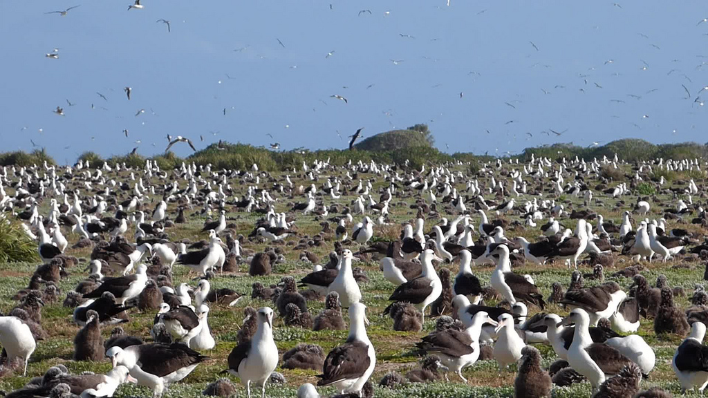
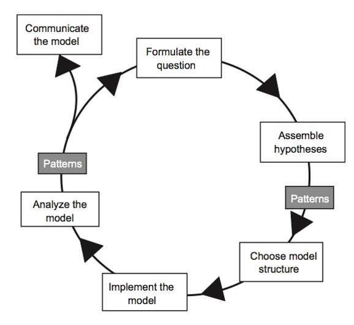
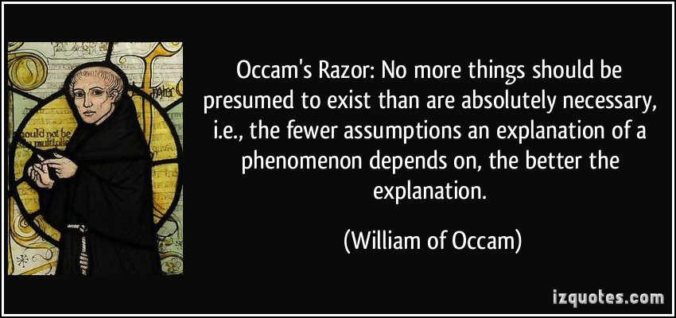

NOTE: Many thanks to Dr. Elizabeth Hunter (USGS and Virginia Tech) for helping to develop the demonstration at the end of this lecture!

So far in this class we have considered the population as the fundamental unit that we are interested in modeling. The population is a [Stock] and all processes that can change the size of the population are [Flows]. All individuals within any [Stock] are assumed to be interchangeable (identical in every way), and are not modeled explicitly.
The fact that we model populations as our fundamental unit of interest makes sense for a population ecology class! BUT we are also aware (of course) that populations consist of individuals that are semi-autonomous. Sometimes the questions we want to ask in ecology and conservation biology require us to zoom in on the processes that are occurring at the individual level.
In some ways a population is hard to define- it can be a bit of an artificial or abstract concept. Where exactly does a population begin and end?
However, the individual is (usually!) a straightforward, biologically meaningful concept.
Before we define how individual-based models differ from the population-level stock-flow models we have already been using, let’s first point out the similarities.
First of all, the basic modeling workflow is ALWAYS the same, no matter what kind of model we want to use!

All models are a way to formalize our understanding about our study system.
Population-based models (PBM; i.e., models of \(N\)) are the main type of model we consider in this class: with all individuals in a [Stock] considered to be interchangeable, \(N\) (possibly age-structured) is our main variable of interest. \(N\) is in turn controlled by endogenous factors (forces coming from inside the population – e.g., density-dependence, demographic stochasticity) and exogenous factors (forces coming from outside the population – e.g., environmental stochasticity, harvest).
Age/stage structured PBMs and sex structured PBMs (i.e., models of \(\mathbf{N}\), i.e., matrix population models) are types of PBM in which individuals are grouped together according to important traits like sex and age, with distinct population vital rates assigned to each group.
Individual-based models (IBM; also known as “agent-based” models) is a way of modeling populations such that all individuals are considered explicitly! We no longer need to group individuals into [Stocks]- each individual can potentially have a different survival probability, or chance of breeding, or movement propensity! These differences can be a result of (e.g.) spatial context or among-individual genetic variation.
In this case, we don’t model \(N\) directly at all – in fact, \(N\) (in an IBM framework) is an emergent property of individual organisms interacting with each other, living or dying in the context of interactions with predators, competitors, and their abiotic environment.
In general, models are tools- you should use the model structure that best fits with the questions you are asking and your understanding of the study system!
And also, if two different model structures are equally appropriate, you should usually use the simplest approach! This idea is often called the Principle of Parsimony (or, Occam’s Razor).

Both IBM and PBM can be used to address questions at the population or metapopulation level.
Q: All populations are composed of individuals. Why then don’t we always model populations using individual-based models?
In general, you should use IBM if your primary information sources (data) are at the individual level (e.g., telemetry data)– allowing you to build informed models of how individuals interact with members of their own species, other interacting species, and with their local environment – in which case the principle of parsimony dictates that you should build models at the individual level! That is, you make fewer assumptions if you model this system as an IBM.
You should use PBM if your primary information is at the population level (e.g., the results of most mark-recapture analyses) – in which case the principle of parsimony dictates that you should build models at the population level!
Q: What are some population ecology questions that might be best addressed using individual-based models (IBM)?
Q: What are some population ecology questions that might be best addressed using population-based models (PBM)?
Individual-based models are powerful- but with power comes great responsibility!
The goal of this activity is to build a mechanistic, individual-based model (IBM) of a (entirely real, not made-up by my a postdoc in my lab I swear!) ecological system.
The Laphlag island archipelago is famous for its dramatic slopes, lush green grass, and its native sheep, the laphlag island bighorn. About 50 years ago, the native island wolf population was hunted to extinction by ranchers to prevent livestock predation.
However, without wolves, populations of the sheep population skyrocketed, and the famous laphlagian lush green grass is quickly being lost to overgrazing by the native sheep.
The locals now realize: to restore ecological balance to the islands They must reintroduce wolves!
The Laphlag natural resources management agency is about to start an experimental wolf reintroduction in a very small island in the archipelago (as a test), but they want to know how to proceed.
You have been hired as a research ecologist to help address the following questions:
How are reintroduced wolves likely to affect grass biomass and distribution?
How many wolves should be introduced to produce the desired ecological effect (lush carpets of green grass)? How long will it take to achieve this desired effect?
The agency biologists give you some information to get a first guess and they promise that you’ll be able to come study this natural system once the reintroductions are underway.
The reintroduction is initiated right after the breeding season and the experiment is run for 365 days.
First, go to InsightMaker and clone the demo individual-based model! Here is the link!.
Make sure you can run the model and interpret the resulting figures.
Does the model behave realistically? Test it! What happens if you start with lots of sheep and no wolves? What happens if you start with no sheep, and a bunch of wolves?
Is it possible for the experimental plot to support sheep, wolves, and grass indefinitely?
Try to adjust the number of sheep and wolves to meet your management goals: [tophat]
What if wolves were more efficient at killing sheep? Try doubling the “Prob of kill” variable and see if/how your answer changes.
What if grass were more productive? Try doubling the “Grass Growth Rate” and see if more sheep can be supported sustainably.
What if the wolves don’t actually kill the sheep, but just scare them (make them move continuously)?? Could the presence of wolves affect grass growth in this case? Can you think of a way to test this using this IBM?
Q: Is there any stochasticity in this model? If so, what kind of stochasticity is there? Take an educated guess! [tophat]